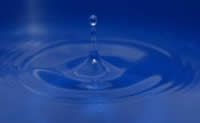
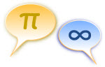

Welcome to Mathematics!
Welcome
Welcome to Mathematics.
You won't need special equipment, millions of dollars or lots of people. You just need your mind.

Mathematics is pure. It does not rust or decay. It only needs your thought to make it work.
Mathematics goes beyond the real world.
Yet the real world seems to be ruled by it.
Universal Language

Mathematics often looks like a collection of symbols. But Mathematics is not the symbols on the page but what those symbols mean.
And it doesn't matter what country you are from, or what language you speak, if you are trained in Mathematics you will also understand what those symbols mean.
So it is the Universal Language. It rises above words.
In fact it is quite possible that Mathematics will be the common link between ourselves and any aliens we may one day meet!
Where did Mathematics come from?
Nobody is certain, but Mathematics may simply be "part of us".
Even people without mathematical training can use their fingers to count, can use basic logic to solve things, and can recognize different properties of shapes.
Logical
Above all Mathematics is logical.
Most of higher Mathematics is based on just a few established ideas (theorems and axioms), and the rest is created purely by logical thinking.
Fun and Challenging
Mathematics is challenging to your mind, and that is what makes it fun. There is nothing better than working on a difficult puzzle, and then getting a breakthrough.
Applied Mathematics
Mathematics has wide applications in Engineering, Physics, Chemistry and most of the other sciences. The major discoveries and inventions have Mathematics at their heart.
And it is widely used in both Information Technology and Communication. These owe their very existence to Mathematics.
Accountants, Economists and Business people use it every day.
The weather is predicted using powerful Mathematical Modeling.
And your favorite computer game has inside it lots of mathematical equations that work out how everything moves and behaves.
An Adventure
And Mathematics is an adventure ... there are always new things to discover and learn. And it will never cease to amaze you how neatly and beautifully it all fits together
It is not always easy, but what good adventure has no challenges? Most of the fun is in learning new things, mastering new methods and solving new puzzles.
So enjoy it and have fun!